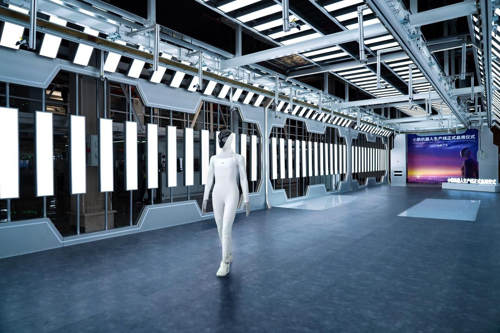

具身智能 · 竞品动态
XPENG 11月25日亮出实体 AI 进展，IRON 将现场展示
XPENG 宣布 11 月25日在广州举行 AI Day，主题为“ORIGIN”，并预告展示 IRON 人形机器人及智能驾驶、Robotaxi 体验。公司称 IRON 具备本体端 AI 算力并可自主执行任务；这些能力仍应以活动演示和后续场景验证为准。

这次公告的看点不是新规格发布，而是一次从企业叙事走向公开演示的节点：XPENG 计划把机器人、车端智能与 Robotaxi 放在同场展示。新闻稿回溯的生产线节点发生在 9 月8日，不是本周的新突破。
对厨房行业的启发是观察通用实体 AI 如何处理非结构化环境、手部操作与安全边界。公告没有提到厨房任务，不能据此推断 IRON 已能做饭或承担家务。
XPENG / GlobeNewswire 新闻稿 · 2026-11-19 11:03 ET（北京时间 11月20日 00:03）公告：11月19日 11:03 ET（北京时间11月20日 00:03）；展示计划：11月25日。